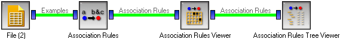

This is documentation for Orange 2.7. For the latest documentation, see Orange 3.
Association Rules Filter¶
A widget for printing out the rules and for their manual exploration and selection.
Signals¶
- Inputs:
- Association Rules
A list of rules
- Outputs:
- Association Rules
Selected rules
Description¶
- This widget can be used for three purposes:
- graphically showing the confidence and support of the induced rules
- selecting a subset of rules based on their confidence and support
- listing the induced rules and the corresponding measures of quality
The columns of the grid on the left hand side of the widget represent different supports and the rows represents confidences. The scale is given above the grid: for the case in this snapshot, support goes from 28% to 75% and the confidence ranges from 29% to 100%. Each cell is colored according to the number of rules with that particular support and confidence - the darker the cell, the more rules are inside it.
You can select a part of the grid. In the snapshot we selected the rules with supports between 36% and 66% and confidences from 33% to 82%.
When the widget receives certain data, it shows the area containing all the rules. You can Zoom in to enlarge the selected part, push Show All to see the region with the rules again, or No Zoom to see the region with support and confidence from 0 to 1. Unselect removes the selection.
If nothing is selected, the widget outputs all rules.
On the right hand side of the widget there is a list of the selected rules. The checkboxes above can be used to select the measures of rule quality that we are interested in. Let L, R and B be the number of examples that fit the left, the right and both sides of the rule, respectively, and N the total number of examples in the data set. The measures are then defined as follows
- support = B / N
- confidence = B / L
- coverage = L / N
- strength = R / L
- lift = N * B / (L * R)
- leverage = N * B - L * R
With the buttons below you can Save Rules into a tab-delimited file or Send Rules to the widget connected to the output. The latter is only enabled if Send rules automatically is unchecked. When it is checked, the rules are put on the widget’s output automatically at every selection change.
Examples¶
This widget is used with the Association Rules and maybe with a tree-like Association Rules Tree Viewer The typical schema is shown below.
